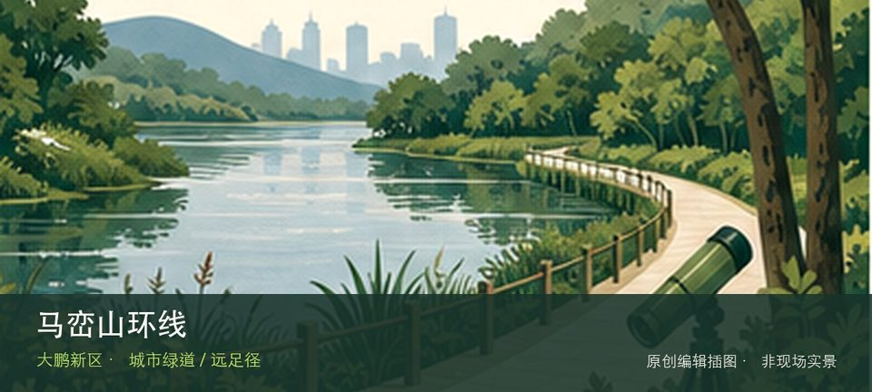
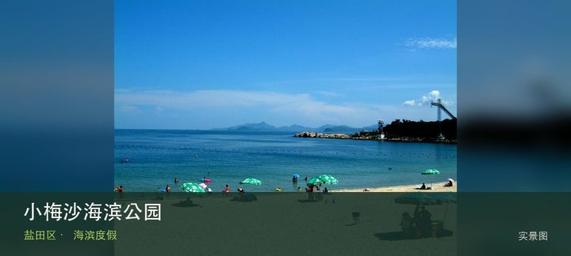

适合谁
适合有基础步行体力、愿意按天气调整路线的人；行动不便者应只选择平缓开放段。

SHENZHEN GUIDE · 315
梅沙湾公园起终点，跨坪山、盐田和大鹏 · 城市绿道 / 远足径
马峦山环线位于梅沙湾公园起终点，跨坪山、盐田和大鹏，约38.5公里的山海环线穿过溪瀑、林地、村落和海岸视野，台风雨季必须主动取消。现场的空间线索集中在马峦山溪瀑群和山海村田复合景观，把两者连起来看，才不会只剩一个笼统印象。现场不必追求一次走完，先在马峦山溪瀑群与山海村田复合景观之间确定主线，再按体力、日照和天气保留折返方案。山地、滨水或林下路面会随降雨改变，当天预警和开放边界始终比旧轨迹更优先。
WHY GO
适合有基础步行体力、愿意按天气调整路线的人；行动不便者应只选择平缓开放段。
先用官方导览在马峦山溪瀑段和山海村田段之间选一个单段，保存入口、出口和下撤点；到计划终点离开，不现场追加穿越。
以梅沙湾公园为总路线识别点，实际出行前在深圳远足径官方导览选择单段入口、出口和公共交通；不要仅导航环线总名。
跨区山海线优先公共交通分段；自驾只停所选入口正规停车场并安排回程接驳，不在村道、溪谷口或消防通道停放。
10月至次年4月较适合分段；汛期溪谷水位和路面变化快，台风、暴雨、雷电或地质灾害预警时取消。
NEARBY IDEAS
 编辑配图·非现场实景
编辑配图·非现场实景
梅沙湾公园位于梅沙上成路8号，位于大小梅沙之间的山海节点，以滨海眺望、山体绿地和社区休憩承担海岸线路的中途停靠。

授权实景图小梅沙海滨公园位于小梅沙，改造后的付费海滨度假区把沙滩、商业与配套项目整体运营，票制、开放区域和项目状态比旧印象更重要。
 编辑配图·非现场实景
编辑配图·非现场实景
木星美术馆位于福田保税区，民营当代艺术空间位于产业园区语境，展览常围绕年轻艺术、跨媒介实践与收藏项目展开，门禁比市属馆更需确认。